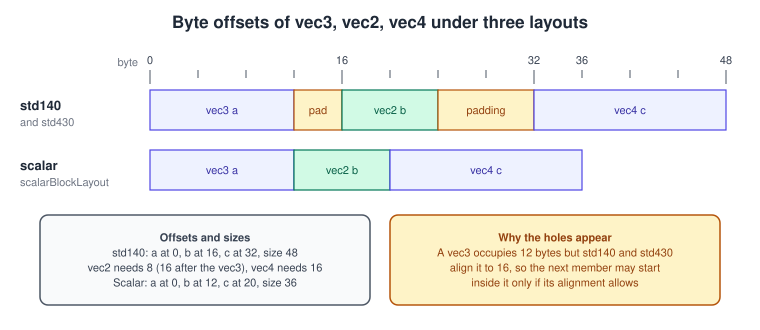
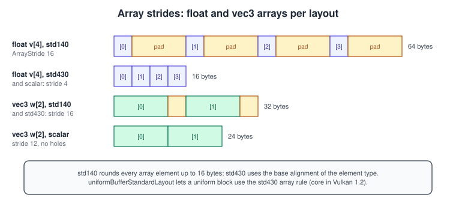
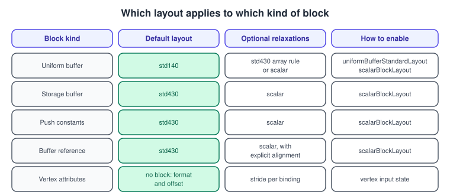

Shader Memory Layout in Vulkan: std140, std430 and Scalar
|
This content was generated with the assistance of AI and should be verified against the official documentation before being relied on in production. |
A Vulkan shader never asks the driver where a member of a buffer lives. The offset of every member, the stride of every array and
the stride of every matrix column are written into the SPIR-V module as Offset, ArrayStride and MatrixStride decorations by
whatever compiled the shader, and the application must fill the buffer so that its bytes match those decorations. There is no
reflection at run time that fixes a mismatch, and the validation layers cannot know what your C++ struct looks like. A wrong
layout therefore produces wrong pixels, not an error. This page explains the three alignment schemes that Vulkan allows (std140,
std430 and scalar), the features that unlock each of them, the rules for scalars, vectors, matrices, arrays and structs, and how to
keep a C++ struct and a shader block in agreement.
The facts were checked in November 2026. The version documented is Vulkan 1.4 (headers 1.4.3xx, LunarG SDK 1.4.363.0), with Vulkan 1.3 as the minimum for the running example. The layout rules themselves have not changed since Vulkan 1.2, when the relaxed, uniform-standard and scalar layouts became core; what changed over the years is how much of the older 16-byte padding you can safely avoid. The platform requirement is a Vulkan 1.2 or later device: the scalar and uniform-standard layouts are core features of Vulkan 1.2 that the device reports and the application enables. Features are enabled per device, so the checks in this page belong in the device-creation code of Physical and Logical Devices.
In the Vulkan Bookshelf running example (C++20, Vulkan-Hpp RAII, VMA, GLFW or SDL3, Slang shaders with GLSL and HLSL alternatives) this page is the contract behind the per-book instance data used from Bookshelf 1: From Triangle to Textured Book and Bookshelf 2: Scene and Game: a per-frame uniform block, a push-constant block and a storage buffer holding one record per book. How the blocks are bound is covered in Descriptors and Push Constants and Bindless, Descriptor Indexing, Buffer Addresses and Heaps, the shader languages in Shaders, SPIR-V and Shading Languages, and the host side of allocating the memory in Memory Heaps, Types and VMA. The same problem in other APIs is described in Uniforms, UBOs and SSBOs in OpenGL and Buffers and Vertex Descriptors in Metal, and the general vertex-data concepts in Meshes and Vertex Data.
Why the layout is a contract
A block in a shader is a structure whose members are placed in a buffer. In SPIR-V every member of a block carries an Offset
decoration in bytes, every array carries an ArrayStride, and every matrix carries a MatrixStride plus RowMajor or ColMajor.
The shading-language front end computes these numbers from the layout qualifier you wrote (or the default of the block kind) and
the driver trusts them. The driver also trusts that the descriptor’s buffer range is large enough; with robust buffer access it
clamps out-of-range reads, but it does not check that a vec3 was where you thought it was.
That has three consequences. First, the source of truth is the shader block: when the C++ struct and the shader disagree, the C++ struct is the one to fix. Second, the layout is chosen per block, so one shader can use std140 for a uniform block and scalar for a storage block. Third, the rules differ by storage class: uniform blocks, storage blocks, push-constant blocks and physical storage buffer blocks (reached through a buffer device address) do not all allow every layout, which is why the features in the next section matter.
The three alignment schemes
The Vulkan Guide names three requirements, which the specification defines in its interface chapter as extended alignment, base
alignment and scalar alignment. In GLSL they are written std140, std430 and scalar.
| Scheme | GLSL qualifier | What it means |
|---|---|---|
Extended alignment |
|
The most restrictive. Arrays of scalars and vectors, structs and matrix columns are rounded up to 16 bytes. It is the default for uniform blocks and works on every Vulkan 1.0 device. |
Base alignment |
|
The same member rules as std140 but without the round-up to 16 bytes for arrays and structs. It is the default for storage blocks
and push constants. Using it in a uniform block needs |
Scalar alignment |
|
Every member is aligned only to the size of its scalar component. A vec3 occupies exactly 12 bytes and the next member can start at
byte 12. Needs |
The rules by type, written with the base alignment unit \( N \) equal to 4 bytes for a 32-bit scalar:
| Type | std140 alignment and size | std430 alignment and size | scalar alignment and size |
|---|---|---|---|
|
4 and 4 |
4 and 4 |
4 and 4 |
|
8 and 8 |
8 and 8 |
4 and 8 |
|
16 and 12 |
16 and 12 |
4 and 12 |
|
16 and 16 |
16 and 16 |
4 and 16 |
Array element |
stride rounded up to 16 |
stride is the element size rounded up to its alignment |
stride equals the element size |
|
alignment 16, column stride 16 |
alignment 16, column stride 16 |
alignment 4, column stride 16 |
|
columns are vec3 with stride 16 |
columns are vec3 with stride 16 |
column stride 12 |
|
column stride 16 |
column stride 8 |
column stride 8 |
struct |
alignment is the largest member alignment rounded up to 16; size is rounded up to a multiple of that |
alignment is the largest member alignment; size is rounded up to a multiple of it |
alignment is the largest scalar alignment of any member |
|
8, 16, 32, 32 |
8, 16, 32, 32 |
8 for all four |
Two sentences summarise the table. A vec3 is the trap of the first two schemes: it has the alignment of a vec4 but the size of three floats, so a following float may start at byte 12 but a following vec2 or vec4 jumps to the next boundary. And in scalar layout nothing is ever rounded up, so a struct containing only floats is exactly as large as the floats it contains.
The offset of each member follows one formula. If the previous member ends at \( e \) bytes and the next member has alignment \( A \), its offset is
\[ \text{ offset } = \left\lceil \frac{ e }{ A } \right\rceil \cdot A \]
and the struct size is the last offset plus the last size, rounded up to the struct alignment when the scheme requires it.
A worked example
The Vulkan Guide uses blocks such as a vec3 followed by a vec2 followed by a vec4. For the Bookshelf the same shape appears as the position, texture-coordinate scale and tint of one book decal:
// std140 / std430: a at 0, b at 16, c at 32, size 48
// scalar: a at 0, b at 12, c at 20, size 36
struct Decal {
vec3 position; // a
vec2 uvScale; // b
vec4 tint; // c
};
In std140 and std430 the vec2 cannot start at byte 12 because its alignment is 8, so it moves to 16; the vec4 needs a multiple of 16 and moves from 24 to 32. In scalar layout the vec4 starts at byte 20, which means one vec4 load straddles a 16-byte boundary. The scalar layout trades possible extra memory transactions for compactness; on current desktop and mobile GPUs this is normally a good trade for storage buffers, but measure on the hardware you target.
Arrays
The array rule is where the schemes differ most. In std140 every array element, even a float, is placed at a 16-byte stride. In
std430 the stride is the element’s own size rounded to its alignment, so float v[4] is 16 bytes. A vec3 w[2] has a 16-byte
stride in both std140 and std430 (the element size is 12 but the alignment is 16) and a 12-byte stride in scalar layout.

The consequence for uniform buffers is concrete. A block declared float weights[8] in a uniform block compiled as std140 has an
ArrayStride 16 and occupies 128 bytes, and the host must write each weight to every fourth float. Declared with
layout(std430) in a uniform block (allowed once uniformBufferStandardLayout is enabled, core in Vulkan 1.2) it has ArrayStride 4
and occupies 32 bytes:
layout(std140, binding = 0) uniform ubo140 { float array140[8]; }; // ArrayStride 16
layout(std430, binding = 1) uniform ubo430 { float array430[8]; }; // ArrayStride 4Runtime-sized arrays (vec4 books[]; as the last member of a storage block) take their stride from the element rules above and
their length from the descriptor’s range, which makes the stride of the element struct the number that the C++ side most often
gets wrong, as the next example shows.
Matrices
A matrix is laid out as an array of its column vectors (in the default column-major order). A mat4 is four vec4 columns of 16
bytes each, 64 bytes in all, in every scheme. A mat3 is three vec3 columns at a 16-byte stride in std140 and std430, so it
occupies 48 bytes of which the last 4 of each column are padding; in scalar layout the columns are packed at 12 bytes and the
matrix is 36 bytes. A mat2 is two vec2 columns; std140 rounds the column stride up to 16 bytes (32 bytes in all), std430 and scalar
keep 8 bytes (16 bytes in all).
If you write matrices from row-major CPU math, either transpose before writing or declare the block member layout(row_major) in GLSL;
the compiler then emits RowMajor instead of ColMajor. HLSL goes the other way: DXC documents that HLSL matrices are
conceptually row-major while SPIR-V matrices are column-major, so it represents HLSL matrices by their transposes and maps the
row_major and column_major qualifiers onto the opposite SPIR-V decorations. When you move a shader between GLSL, HLSL and Slang,
check the matrix convention first, because the layout can be correct while every matrix is silently transposed.
Structs and nested blocks
A struct member of a block starts at a multiple of the struct’s alignment and the next member starts after the struct’s size rounded as the scheme demands. In std140 a struct is aligned and padded to a multiple of 16 bytes, so a struct of one float occupies 16 bytes. In std430 a struct is aligned to its largest member, so a struct of one float occupies 4 bytes. In scalar layout the alignment is the largest scalar alignment inside the struct. Because arrays of structs use the struct size as stride, a struct that is 84 bytes of data is 96 bytes per element in std430 (when it contains a mat4 with alignment 16) and 84 bytes in scalar layout.
This is exactly the situation of the Bookshelf’s per-book record:
struct BookInstance {
mat4 model; // offset 0, 64 bytes
vec3 tint; // offset 64, 12 bytes
uint textureIndex; // offset 76, fills the vec3 hole
uint flags; // offset 80
}; // std430 size 96 (padded); scalar size 84Where each layout is allowed
The layout depends on what kind of memory the block lives in. Uniform blocks default to std140, storage blocks and push constants to std430, and each kind has a feature that allows a more compact scheme.

| Feature or extension | Core in | Feature structure and member | What it allows |
|---|---|---|---|
|
Vulkan 1.1 |
none (always available on 1.1 and later) |
A member’s |
|
Vulkan 1.2 |
|
std430 rules for uniform blocks, so arrays are not padded to 16 bytes. Storage blocks and push constants already allowed std430. |
|
Vulkan 1.2 |
|
Scalar alignment in uniform blocks, storage blocks, push constants and buffer references. The Workgroup storage class needs |
The relaxed rules explain a common surprise. A block declared in GLSL layout(std430) buffer { float b; vec3 a; } places a at byte 16 because
GLSL itself cannot express relaxed offsets; the Vulkan Guide notes that you can obtain the relaxed offsets (a at byte 4) by compiling
HLSL with glslang’s --hlsl-offsets option or by using scalar layout. In practice most projects pick either std140 or std430 with
careful ordering, or scalar layout everywhere on storage and push-constant blocks.
Enabling the features from C++
Features are queried with vkGetPhysicalDeviceFeatures2 and enabled by chaining the same structures into VkDeviceCreateInfo. In
Vulkan 1.2 and later the two features sit in VkPhysicalDeviceVulkan12Features. The example uses Vulkan-Hpp RAII and a structure chain
so that the sType and pNext plumbing is generated for you; the queue setup is the one from
Physical and Logical Devices.
#include <vulkan/vulkan_raii.hpp>
#include <stdexcept>
// Returns a feature chain ready to be linked into vk::DeviceCreateInfo::pNext.
// Throws if the device lacks the layouts the Bookshelf shaders were written for.
vk::StructureChain<vk::PhysicalDeviceFeatures2, vk::PhysicalDeviceVulkan12Features>
makeLayoutFeatures(const vk::raii::PhysicalDevice& physicalDevice)
{
auto supported =
physicalDevice.getFeatures2<vk::PhysicalDeviceFeatures2, vk::PhysicalDeviceVulkan12Features>();
const auto& v12 = supported.get<vk::PhysicalDeviceVulkan12Features>();
if (!v12.scalarBlockLayout) {
throw std::runtime_error("scalarBlockLayout is not supported by this device");
}
vk::StructureChain<vk::PhysicalDeviceFeatures2, vk::PhysicalDeviceVulkan12Features> enabled;
enabled.get<vk::PhysicalDeviceVulkan12Features>()
.setScalarBlockLayout(true)
.setUniformBufferStandardLayout(v12.uniformBufferStandardLayout);
return enabled;
}
// Usage while creating the device (queueInfos built as in the devices page):
// auto features = makeLayoutFeatures(physicalDevice);
// vk::DeviceCreateInfo info{};
// info.setQueueCreateInfos(queueInfos)
// .setPEnabledExtensionNames(deviceExtensions)
// .setPNext(&features.get<vk::PhysicalDeviceFeatures2>());
// vk::raii::Device device{physicalDevice, info};Where the device reports a Vulkan 1.3 or 1.4 profile, the same members apply unchanged. When you instead target the profiles of Versions, Profiles and Extensions, check the profile’s feature list instead of testing the bit by hand.
Matching a C++ struct to a block
The robust way to keep both sides in agreement is to describe the layout once, in C++, with alignas, offsetof and static_assert, so that
the build fails when someone reorders a member. The example gives the Bookshelf per-book record in both std430 and scalar form. Plain
float arrays are used instead of a math library so that no vector type can change the alignment behind your back (with a library
such as GLM, check whether its aligned vector types are enabled before relying on sizeof).
#include <cstddef>
#include <cstdint>
// std430: struct alignment is that of the mat4, 16 bytes; size 96.
struct alignas(16) BookInstanceStd430 {
float model[16]; // offset 0
float tint[3]; // offset 64
uint32_t textureIndex; // offset 76, uses the space after the vec3
uint32_t flags; // offset 80
uint32_t padding[3]; // offsets 84, 88, 92: explicit tail padding
};
static_assert(offsetof(BookInstanceStd430, tint) == 64);
static_assert(offsetof(BookInstanceStd430, textureIndex) == 76);
static_assert(offsetof(BookInstanceStd430, flags) == 80);
static_assert(sizeof(BookInstanceStd430) == 96, "array stride must match the shader");
// scalar: every member aligned to 4 bytes; size 84, array stride 84.
struct BookInstanceScalar {
float model[16]; // offset 0
float tint[3]; // offset 64
uint32_t textureIndex; // offset 76
uint32_t flags; // offset 80
};
static_assert(offsetof(BookInstanceScalar, flags) == 80);
static_assert(sizeof(BookInstanceScalar) == 84, "array stride must match the shader");
static_assert(alignof(BookInstanceScalar) == 4);The matching GLSL declares the same record twice, once per scheme. The array stride appears only through the struct size, which is
why the static_assert on sizeof is the most valuable line of the example:
#version 460
#extension GL_EXT_scalar_block_layout : require
struct BookInstance {
mat4 model;
vec3 tint;
uint textureIndex;
uint flags;
};
// Option 1: std430. Stride 96, matches BookInstanceStd430.
layout(std430, set = 0, binding = 1) readonly buffer BooksStd430 {
BookInstance books[];
} std430Books;
// Option 2: scalar. Stride 84, matches BookInstanceScalar.
layout(scalar, set = 0, binding = 2) readonly buffer BooksScalar {
BookInstance books[];
} scalarBooks;Source: GL_EXT_scalar_block_layout
Sub-allocation and offset alignment
The layout rules govern the bytes inside a block; a second set of rules governs where the block starts. Descriptor offsets
(including the dynamic offsets of dynamic uniform and storage buffers) must be multiples of minUniformBufferOffsetAlignment and
minStorageBufferOffsetAlignment, which the specification caps at 256 bytes. Push constants are limited by maxPushConstantsSize
(at least 128 bytes), uniform blocks by maxUniformBufferRange (at least 16384 bytes) and storage blocks by maxStorageBufferRange.
When you pack several per-frame blocks into one buffer, align each start with the limit:
#include <vulkan/vulkan_raii.hpp>
constexpr vk::DeviceSize alignUp(vk::DeviceSize value, vk::DeviceSize alignment)
{
// alignment must be a power of two, which the Vulkan limits guarantee
return (value + alignment - 1) & ~(alignment - 1);
}
struct FrameBufferLayout {
vk::DeviceSize cameraOffset; // offset of the uniform block of frame data
vk::DeviceSize lightOffset; // offset of the lamp uniform block
vk::DeviceSize totalSize;
};
FrameBufferLayout planFrameBuffer(const vk::raii::PhysicalDevice& physicalDevice,
vk::DeviceSize cameraBytes, vk::DeviceSize lightBytes)
{
const auto limits = physicalDevice.getProperties().limits;
const vk::DeviceSize align = limits.minUniformBufferOffsetAlignment;
FrameBufferLayout out{};
out.cameraOffset = 0;
out.lightOffset = alignUp(out.cameraOffset + cameraBytes, align);
out.totalSize = alignUp(out.lightOffset + lightBytes, align);
return out;
}Source: Vulkan specification: Limits
The same record in GLSL, Slang and HLSL
The Bookshelf shaders are written in Slang, with GLSL and HLSL as alternatives. The layout is chosen differently in each language.
Slang has no per-block qualifier; the layout is a compiler option. By default a ConstantBuffer follows std140-style rules and a
StructuredBuffer follows std430-style rules. The options -fvk-use-scalar-layout and -force-glsl-scalar-layout make data
accessed through ConstantBuffer, ParameterBlock, StructuredBuffer, ByteAddressBuffer and general pointers use scalar layout when
targeting GLSL or SPIR-V, and -fvk-use-dx-layout packs members with the FXC rules.
// book.slang
struct BookInstance {
float4x4 model;
float3 tint;
uint textureIndex;
uint flags;
};
struct Frame {
float4x4 viewProj;
float4 lampPositionAndRange; // xyz position, w range
};
[[vk::binding(0, 0)]] ConstantBuffer<Frame> frame;
[[vk::binding(1, 0)]] StructuredBuffer<BookInstance> books;
struct VSOut {
float4 position : SV_Position;
float3 tint;
};
[shader("vertex")]
VSOut vertexMain(float3 position : POSITION, uint instanceId : SV_InstanceID)
{
BookInstance b = books[instanceId];
VSOut o;
o.position = mul(frame.viewProj, mul(b.model, float4(position, 1.0)));
o.tint = b.tint;
return o;
}# std430-style (default): array stride 96 for the book record
slangc book.slang -target spirv -entry vertexMain -stage vertex -o book.std430.spv
# scalar: array stride 84, requires scalarBlockLayout on the device
slangc book.slang -target spirv -entry vertexMain -stage vertex -fvk-use-scalar-layout -o book.scalar.spvHLSL compiled by DXC uses, by default, a vector-relaxed variant of std140 for cbuffer and ConstantBuffer and of std430 for
StructuredBuffer and its read-write variants: a vector’s alignment equals its element alignment unless that would make it straddle
a 16-byte boundary, in which case it becomes 16. -fvk-use-gl-layout selects strict std140 and std430 for data shared with OpenGL,
-fvk-use-dx-layout the DirectX rules and -fvk-use-scalar-layout scalar layout, the last two requiring scalarBlockLayout.
// book.hlsl
struct BookInstance {
float4x4 model;
float3 tint;
uint textureIndex;
uint flags;
};
[[vk::binding(1, 0)]] StructuredBuffer<BookInstance> books;
struct Frame { float4x4 viewProj; float4 lampPositionAndRange; };
[[vk::binding(0, 0)]] ConstantBuffer<Frame> frame;
float4 main(float3 position : POSITION, uint id : SV_InstanceID) : SV_Position
{
BookInstance b = books[id];
return mul(frame.viewProj, mul(b.model, float4(position, 1.0)));
}dxc -spirv -T vs_6_6 -E main -fspv-target-env=vulkan1.3 -fvk-use-scalar-layout book.hlsl -Fo book.hlsl.spvSlang’s command-line reference documents the Vulkan layout options: Slang documentation
Push constants and buffer references
Push constants are a small block in a command buffer and use std430 by default, so a vec3 followed by a float fits in 16 bytes. With
scalarBlockLayout they can be packed completely. A common pattern in the Bookshelf is to push a 64-bit buffer address plus a few
indices instead of binding a descriptor; the address is read through a buffer reference, which supports std430 and scalar and
takes an explicit alignment:
#version 460
#extension GL_EXT_buffer_reference : require
#extension GL_EXT_scalar_block_layout : require
struct BookInstance { mat4 model; vec3 tint; uint textureIndex; uint flags; };
layout(buffer_reference, scalar, buffer_reference_align = 4) readonly buffer BookArray {
BookInstance items[];
};
layout(push_constant, scalar) uniform Push {
BookArray books; // 8 bytes at offset 0, the buffer device address
uint firstBook; // offset 8
uint pad0;
} pc;The address comes from vkGetBufferDeviceAddress on a buffer created with VK_BUFFER_USAGE_SHADER_DEVICE_ADDRESS_BIT, a feature that
is core and mandatory from Vulkan 1.3; see Bindless, Descriptor Indexing, Buffer Addresses and Heaps
for the binding side. The buffer_reference_align value is a promise you make about the address: a lower value than the real alignment
only costs speed, a higher value is undefined behaviour.
Source: GL_EXT_buffer_reference
Vertex data is not a layout block
Vertex attributes are not described by std140 or scalar rules. Each attribute is declared with a VkFormat, a binding and an
offset in VkVertexInputAttributeDescription, and each binding has a stride, so a vec3 position followed by a vec3 normal and a vec2
texture coordinate is a legitimate tightly packed 32-byte vertex. If the same data is read from a storage buffer instead of through
vertex input (vertex pulling), it becomes a block again and the rules of this page apply. See
Vertex Input and Drawing for vertex fetch.
Validating and inspecting layouts
-
spirv-valchecks the decorations in a module against the rules of the layout in use. It needs the matching option when the module uses a relaxed scheme:--relax-block-layoutfor Vulkan 1.0 targets,--uniform-buffer-standard-layoutfor std430 in uniform blocks and--scalar-block-layoutfor scalar layout. The Khronos validation layer validates the SPIR-V of every shader module, so a module that declares a layout the device did not enable is reported there. -
The validation layer cannot check the host struct. The
static_assertexamples above are the only guard against a reordered member. -
RenderDoc and other capture tools can display a buffer using the shader’s own layout, which is the quickest way to see that instance 3 contains instance 2’s tint.
-
Debug Printf from the validation layers (see Validation and Debug Utils) prints the values the shader reads and shows at once whether a stride is wrong.
Common mistakes
-
Declaring a
vec3array in a std430 block and expecting a 12-byte stride. The stride is 16; use avec4or scalar layout. -
Forgetting that std140 pads a lone
floatarray to 16 bytes per element, which turns a 32-byte weight table into 128 bytes. -
Writing a mat3 as nine contiguous floats. In std140 and std430 each column is padded to 16 bytes.
-
Using
sizeofof a C++ struct that contains a glm or Eigen vector type whose alignment differs from the shader’s. -
Declaring a block
scalarin GLSL but compiling for a device that did not enablescalarBlockLayout. Creation of the shader module or the pipeline is reported by the validation layer; without it, the result is undefined. -
Reordering members in one language only. Keep the layout definition in a single header or generate both sides from one description.
-
Binding a buffer at an offset that is not a multiple of the offset-alignment limit.
Performance notes
-
Order members from the largest alignment to the smallest so that std140 and std430 insert as little padding as possible, and pack a vec3 and a scalar into a single 16-byte slot as in the Bookshelf record above.
-
Padding costs bandwidth, not correctness. For large instance arrays a 96-byte versus 84-byte stride is a 12 percent difference that only matters when the shader is memory-bound.
-
Scalar layout lets a vec4 straddle 16-byte boundaries; hardware may then split the access. Use it for storage and push constants where compactness helps, and keep per-frame uniform data in std140 when the data is small and read by every thread.
-
Fewer, larger blocks are cheaper than many small ones. Pack related per-frame data into a few uniform blocks and sub-allocate from one buffer.
What changed recently
| Date or version | Change | Effect on code written for the 2016 and 2017 books |
|---|---|---|
Vulkan 1.1 (2018) |
Relaxed block layout became core. |
Offsets may be tighter than the 16-byte std140 padding the Vulkan 1.0 era assumed. |
Vulkan 1.2 (2020) |
Uniform-buffer standard layout and scalar block layout became core features; buffer device address became core. |
Uniform blocks can use std430 array rules, and storage blocks and push constants can use scalar layout. |
Vulkan 1.3 (2022) |
Buffer device address and the Vulkan memory model became mandatory. |
Pointer-based access through buffer references is available on every conformant device. |
Vulkan 1.4 (December 2024) |
The layout rules are unchanged; several features were promoted into the core and made mandatory. |
Layout choices remain per block; query the features rather than assuming them on older drivers. |
The books written for Vulkan 1.0 (the Vulkan Programming Guide of 2016 and the Vulkan Cookbook of 2017) predate relaxed,
uniform-standard and scalar layouts, so the way they pad every block for std140 is still correct but no longer the only choice. Their
GLSL examples compile with the older glslangValidator; new code should compile with glslc, DXC or slangc as shown above.